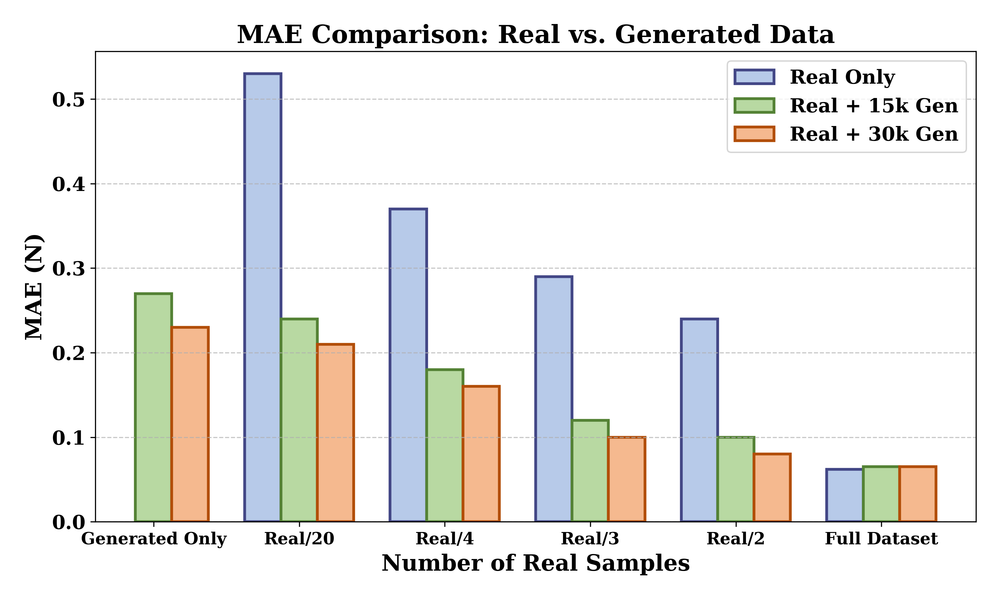
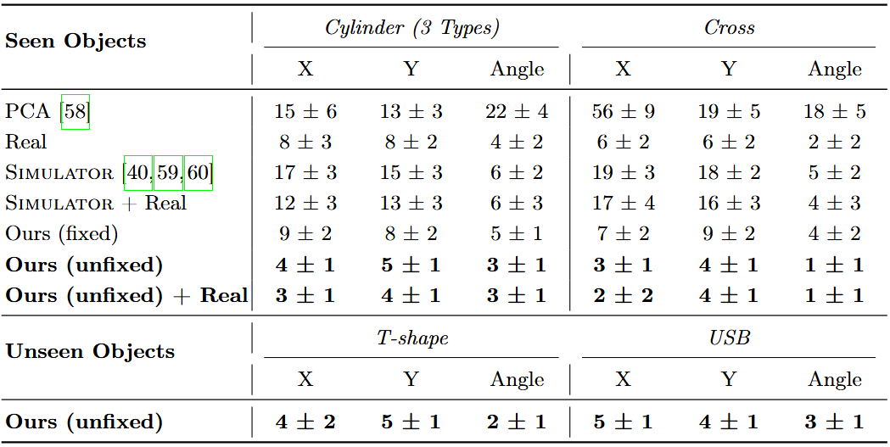
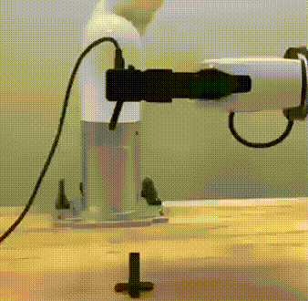

The left figure illustrates how the force-controlled component in ControlTac augments
1,000 real samples with a larger set of generated tactile images, leading to a substantial reduction in MAE
compared to using real data alone. Notably, by incorporating the generated data, the model achieves comparable
performance to training on the full real dataset (20,000 images) using only 8,000 real samples. This demonstrates
that the generated data effectively enrich the force distribution at each contact position, thereby enhancing the
training of the force estimator. Moreover, combining a larger quantity of both real and generated data yields the
best overall performance, underscoring the realism and utility of the generated samples.
Building on the force-controlled component, we further integrate the position-controlled component of
ControlTac. To highlight the importance of diverse contact positions in
training a robust force estimator, we divide the real dataset by contact angle, since tactile image
appearance varies across different contact angles. The right figure presents the MAE of force estimation
under different training conditions. The results show that incorporating position-controlled generation
effectively compensates for limited angular diversity in real data, significantly improving performance
even when only a small subset of real images is available—especially in scenarios where the real data covers
a narrow range of angles.

We further validate the effectiveness of ControlTac in real-world pushing
experiments. The force estimator trained only with generated tactile data achieves
comparable performance to the one trained on real tactile data, demonstrating that the generated data is
realistic and reliable enough to be used directly for training in practical scenarios.
As shown in the table below, pose estimators trained on tactile images generated by
ControlTac achieve strong performance across all objects,
including the unseen T Shape. In particular, using a larger amount of generated data
leads to better results than using real data alone, as it is sufficiently realistic
and covers a much wider range of contact positions and forces. We also compare the
performance of the pose estimator using varying forces versus a fixed force (denoted
as fixed in the table below, where the fixed force is set to the median value of 6.5 N).
The results show that using varying force yields better performance, as contact force naturally
changes during inference.

To further evaluate the performance of the pose estimator trained with ControlTac-generated data,
we conducted a real-time pose tracking experiment. Our model successfully tracked poses at a
frequency of 10 Hz, highlighting its practicality in dynamic real-world scenarios.
In the Precise Insertion task, the pose estimator trained with ControlTac-generated
data achieved success rates of 90% on the cylinder and 85% on the cross. Notably,
it also reached an 85% success rate on the unseen T-shape.

In the object classification task, we found that compared to traditional augmentation methods, using ControlTac for data augmentation yields significantly better performance—whether with a simple CNN classifier, a ViT trained from scratch, or a ViT pretrained on ImageNet.
Note: G = geometric augmentation; C = color augmentation; Gen = our ControlTac-based augmentation method.